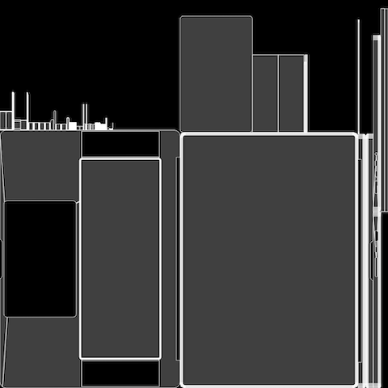

My desk
制作期間・スケジュール 2022年 4月 構成決め 2022年 4月 モデリング/テクスチャ作成 合計10日間
概要 ポートフォリオサイトのモックアップ用背景 ツールはBlenderを使用して行なった 総ポリゴン数：7,476,614
コンセプトアート
コンセプト・説明 実際に自分の部屋に設置してあるデスク周りを再現して作成。 Webサイトのモックアップということで載せるサイトを見せる用途のため、 制作の際自分の机の上に載っているデバイス数より少なくした。 そのことによりスッキリした見た目になるように意識した。 またモデリングの練習用も兼ねて自作PCの方はパーツ毎に制作し、 できる限りテクスチャ頼りではなくモデリングで制作を行った。
ワイヤーフレーム
ワイヤーフレーム説明 モックアップの背景画像で使用するもののため、 見た目向上の意味も兼ねてポリゴン数を多めにして制作を行った。 また、自作PCのメッシュやMacBookのスピーカーなどもよりリアルな感じを演出するために、 全ての穴をモデリングで制作した。 さらに、汎用性を高くするためとモデリングの練習を兼ねて、 できる限り全てのパーツを別々で制作した。
テクスチャ《CPU周り》
テクスチャ&ライティング説明 自作PCの一つの特徴である光をよりリアルに表現するために、 ファンのテクスチャはプラスチックのように角度によって透過率が変化するようにBlenderのノードで作成した。 また、金属部分も同様に金属光沢と金属特有のざらつきを演出できるように作成した。
UV展開《ファンの羽》
UV展開《MacBook底面》 
©︎ 2021 Toshitake Suzuki